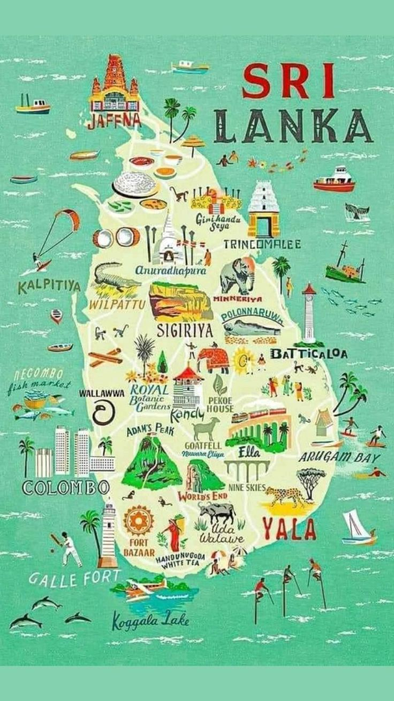

Latest Blogs
AI-Driven Crop Recommendations
Leverages soil nutrient levels, weather data, and water availability.
Region-Specific Insights
Suggestions tailored to Sri Lanka’s diverse climatic zones.

Real-Time Dashboard
View crop recommendations and cultivation summaries for every district.